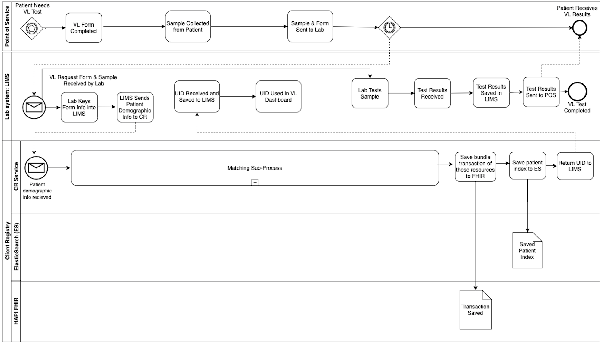
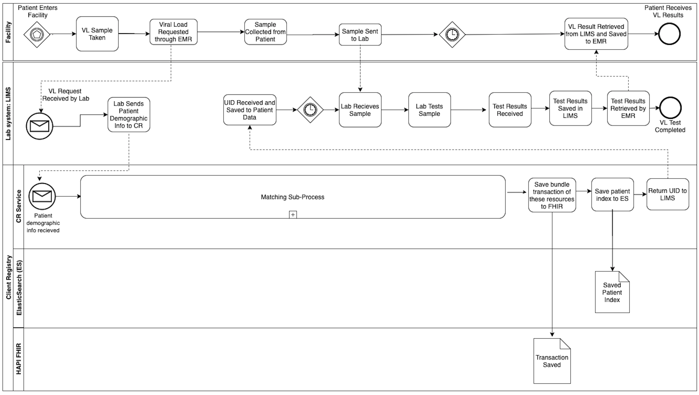
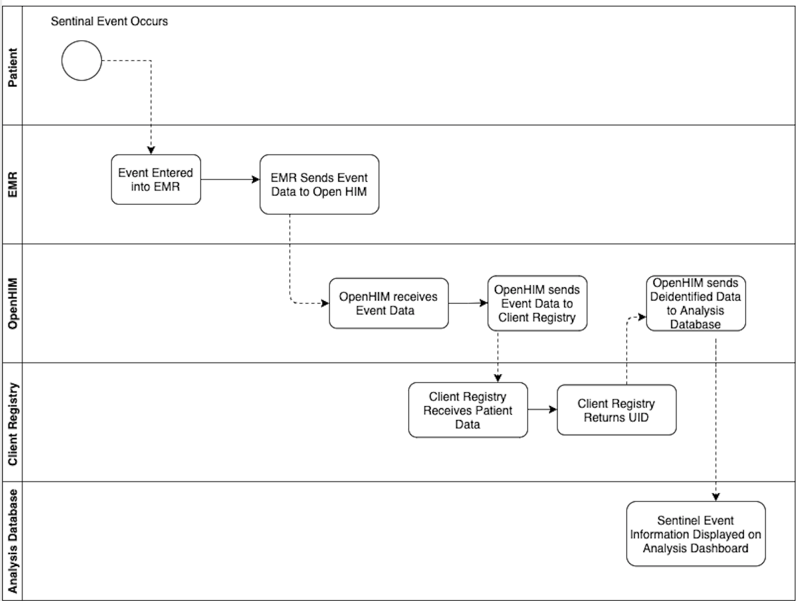

Workflows¶
Introduction¶
The process for a point-of-service system like an EMR to get a unique ID from the Client Registry is straightforward though it looks complicated at first.
- A POS provides some demographic information to the Client Registry.
- The Client Registry looks for an existing record matching that patient.
- If there is an existing record, the Client Registry provides the unique ID back to the POS.
- If there is not an existing record, the Client Registry makes a new one and provides a unique ID back to the POS.
As noted in the introduction, the Client Registry provides a unique identifier that also links to all other already matched records from submitting systems. This means that the Client Registry stores an identifier from submitting systems so that it can uniquely identify according to however the submitting systems store their records, but it also produces a UID for the entire domain using the service.
Warning
The below workflows the Client Registry does not store or provide clinical data. Such processes are external to the Client Registry and must be separately created, governed, and enabled.
Examples¶
Several workflows are supported out-of-the-box depending on the POS-Client Registry use case.
Viral Load Test Requested by Paper¶

A plasma specimen is received by a laboratory for HIV viral load testing. Demographic data and requesting location data is entered into the LMIS. The LMIS queries the Client Registry for a UID. The Client Registry provides the UID if one did not exist and stores limited patient demographic information but does not store test results. A use that this enables (but the Client Registry does not provide) is the ability to track persons lab results over time.
Viral Load Test Requested by EMR¶

A patient is registered at a clinic. The clinician recommends an HIV viral load test. The plasma specimen is sent for processing to the laboratory. The Client Registry receives the UID and specimen and returns a diagnostic result that is then stored in the EMR.
Case-Based Surveillance¶

A patient is registered at a clinic and has been assigned a UID. In the course of their clinical encounter, a sentinel event occurs, triggering the EMR to send limited clinical information to the Health Information Exchange (HIE). The HIE sends the data to a data analysis warehouse for population analysis and case-based surveillance.